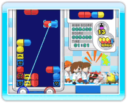
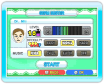

16 |
Germ Buster spelen |
 |
 
Germ Buster kan door maximaal vier spelers tegelijkertijd worden gespeeld. De spelregels zijn hetzelfde als in het speltype Classic van Dr. Mario, maar het spel wordt bestuurd met de aanwijzer van de Kies in het hoofdmenu voor GERM BUSTER om het spel te beginnen. Kies in het Germ Buster-menu, dat hierna verschijnt, voor START om het instellingenscherm te openen. Hier kun je het virusniveau, de moeilijkheidsgraad en achtergrondmuziek te kiezen en kies voor START om het spel te beginnen. Opmerking: iedere speler moet een Wii-afstandsbediening gebruiken om Germ Buster te spelen. |
 of
of  om hem te draaien. Houd een van deze knoppen ingedrukt om de capsule naar de gewenste plek te slepen.
om hem te draaien. Houd een van deze knoppen ingedrukt om de capsule naar de gewenste plek te slepen.  |
 |
 |